에너지관리기사 (2015-03-08 기출문제)
1과목: 연소공학
1. 석탄을 완전 연소시키기 위하여 필요한 조건에 대한 설명 중 틀린 것은?
- 공기를 적당하게 보내 피연물과 잘 접촉시킨다.
- 연료를 착화온도 이하로 유지한다.
- 통풍력을 좋게 한다.
- 공기를 예열한다.
(정답률: 91%)

2. 다음 중 연소 온도에 가장 많은 영향을 주는 것은?
- 외기온도
- 공기비
- 공급되는 연료의 현열
- 열매체의 온도
(정답률: 89%)
3. 고체연료의 전황분 측정방법에 해당되는 것은?
- 에슈카법
- 쉐필드 고온법
- 중량법
- 리비히법
(정답률: 71%)
4. 1차, 2차 연소 중 2차 연소란 어떤 것을 말하는가?
- 공기보다 먼저 연료를 공급했을 경우 1차, 2차 반응에 의해서 연소하는 것
- 불완전 연소에 의해 발생한 미연가스가 연도 내에서 다시 연소하는 것
- 완전 연소에 의한 연소가스가 2차 공기에 의해서 복발 되는 것
- 점화할 때 착화가 늦었을 경우 재점화에 의해서 연소하는 것
(정답률: 86%)
5. 연소가스 중의 질소산화물 생성을 억제하기 위한 방법으로 틀린 것은?
- 2단 연소
- 고온 연소
- 농담 연소
- 배기가스 재순환 연소
(정답률: 81%)
6. 프로판(Propane)가스 2kg을 완전 연소시킬 때 필요한 이론공기량은?
- 약 6Nm3kg
- 약 8Nm3kg
- 약 16Nm3kg
- 약 24Nm3kg
(정답률: 65%)
7. 기계분(機械焚) 연소에 대한 설명으로 틀린 것은?
- 설비비 및 운전비가 높다.
- 산포식 스토커는 호퍼, 회전익차, 슈크류피이더가 주요 구성요소이다.
- 고정화격자 연소의 경우 효율이 떨어진다.
- 저질연료를 사용하여도 유효한 연소가 가능하다.
(정답률: 64%)
8. 백 필터(bag-filter)에 대한 설명으로 틀린 것은?
- 여과면의 가스 유속은 미세한 더스트 일수록 적게 한다.
- 더스트 부하가 클수록 집진율은 커진다.
- 여포재에 더스트 일차부착층이 형성되면 집진율은 낮아진다.
- 백의 밑에서 가스백 내부로 송입하여 집진한다.
(정답률: 64%)
9. 액체연료 중 고온 건류하여 얻은 타르계 중유의 특징에 대한 설명으로 틀린 것은?
- 화염의 방사율이 크다.
- 황의 영향이 적다.
- 슬러지를 발생시킨다.
- 단위 용적당의 발열량이 적다.
(정답률: 73%)
10. C(85%), H(15%)의 조성을 가진 중유를 10kg/h의 비율로 연소시키는 가열로가 있다. 오르자트 분석결과가 다음과 같았다면 연소 시 필요한 시간당 실제공기량은? (단, CO2=12.5%, O2=3.2%, N2=84.3%이다.)
- 약 121Nm3
- 약 124Nm3
- 약 135Nm3
- 약 143Nm3
(정답률: 46%)
11. 미분탄연소의 일반적인 특징에 대한 설명으로 틀린 것은?
- 사용연료의 범위가 좁다.
- 소량의 과잉공기로 단시간에 완전연소가 되므로 연소효율이 높다.
- 부하변동에 대한 적응성이 좋다.
- 회(灰), 먼지 등이 많이 발생하여 집진장치가 필요하다.
(정답률: 58%)
12. 연소 배기가스 중 가장 많이 포함된 기체는?
- O2
- N2
- CO2
- SO2
(정답률: 76%)
13. 벙커 C유 연소배기가스를 분석한 결과 CO2의 함량이 12.5%이었다. 이 때 벙커 C유 500L/h 연소에 필요한 공기량은? (단, 벙커 C유 이론공기량은 10.5Nm3/kg, 비중 0.96, CO2max는 15.5% 로 한다.)
- 약 1⑤Nm3/min
- 약 150Nm3/min
- 약 180Nm3/min
- 약 200Nm3/min
(정답률: 41%)
14. 메탄 1Nm3를 이론 산소량으로 완전 연소시켰을 때의 습연소 가스의 부피는 몇 Nm3인가?
- 1
- 2
- 3
- 4
(정답률: 48%)
15. 착화열에 대한 설명으로 옳은 것은?
- 연료가 착화해서 발생하는 전 열량
- 외부로부터의 점화에 의하지 않고 스스로 연소하여 발생하는 열량
- 연료 1kg이 착화하여 연소할 때 발생하는 총 열량
- 연료를 최초의 온도부터 착화 온도까지 가열하는데 사용된 열량
(정답률: 63%)
16. 건조한 석탄층을 공기 중에 오래 방치할 때 일어나는 현상 중에서 틀린 것은?
- 공기 중 산소를 흡수하여 서서히 발열량이 감소한다.
- 점결탄의 경우 점결성이 감소한다.
- 불순물이 증발하여 발열량이 증가한다.
- 산소에 의하여 산화와 직사광선으로 열을 발생하여 자연발화할 수도 있다.
(정답률: 70%)
17. 연소 시 배기 가스량을 구하는 식으로 옳은 것은? (단, G : 배기가스량, Go : 이론 배기가스량, Ao : 이론공기량, m : 공기비이다.)
- G=Go+(m-1)Ao
- G=Go+(m+1)Ao
- G=Go-(m+1)Ao
- G=Go+(1-m)Ao
(정답률: 74%)
18. 액체연료가 갖는 일반적인 특징이 아닌 것은?
- 연소온도가 높기 때문에 국부과열을 일으키기 쉽다.
- 발열량은 높지만 품질이 일정하지 않다.
- 화재, 역화 등의 위험이 크다.
- 연소할 때 소음이 발생한다.
(정답률: 68%)
19. 고체연료의 연소가스 관계식으로 옳은 것은? (단, G:연소가스량, Go:이론연소가스량, A:실제공기량, Ao:이론공기량, a:연소생성수증가량)
- Go=Ao+1-a
- G=Go-A+Ao
- G=Go+A-Ao
- Go=Ao-1+a
(정답률: 63%)
20. 연소실에서 연소된 연소가스의 자연통풍력을 증가시키는 방법으로 틀린 것은?
- 연돌의 높이를 높게 하면 증가한다.
- 배기가스의 비중량이 클수록 증가한다.
- 배기가스 온도가 높아지면 증가한다.
- 연도의 길이가 짧을수록 증가한다.
(정답률: 61%)
2과목: 열역학
21. 300℃, 200kPa 인 공기가 탱크에 밀폐되어 대기 공기로 냉각되었다. 이 과정에서 탱크 내 공기 엔트로피의 변화량을 △S1, 대기 공기의 엔트오피의 변화량을 △S2라 할 때 엔트로피 증가의 원리를 옳게 나타낸 것은?
- △S1+△S2≤0
- △S1+△S2＜0
- △S1+△S2＞0
- △S1+△S2=0
(정답률: 74%)
22. 교축(스로틀) 과정에서 일정한 값을 유지하는 것은?
- 압력
- 비체적
- 엔탈피
- 엔트로피
(정답률: 81%)
23. 포화액의 온도를 유지하면서 압력을 높이면 어떤 상태가 되는가?
- 습증기
- 압축(과냉)액
- 과열증기
- 포화액
(정답률: 66%)
24. 열펌프(heat pump)사이클에 대한 성능계수(COP)는 다음 중 어느 것을 입력 일(work input)로 나누어 준 것인가?
- 저온부 압력
- 고온부 온도
- 고온부 방출열
- 저온부 부피
(정답률: 77%)
25. H=H(T, P)로부터
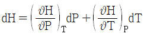
를 유도할 수 있다. 다음 중 옳은 것은?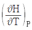
는 P의 함수,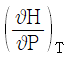
는 T의 함수이다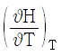
는 P의 함수,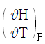
는 T의 함수이다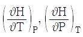
모두 T, P의 함수이다.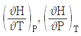
둘다 P 만의 함수이다.
(정답률: 63%)
26. 공기 표준 디젤 사이클에서 압축비가 17이고 단절비(cut-off ratio)가 3일 때의 열효율은 약 몇 %인가? (단, 공기의 비열비는 1.4이다.)
- 52
- 58
- 63
- 67
(정답률: 54%)
27. 용적 0.02m3의 실린더 속에 압력 1MPa, 온도 25℃의 공기가 들어 있다. 이 공기가 일정 온도 하에서 압력 200kPa까지 팽창하였을 경우 공기가 행한 일의 양은 약 몇 kJ인가? (단, 공기는 이상기체이다.)
- 2.3
- 3.2
- 23.1
- 32.2
(정답률: 29%)
28. 다음 중 상대습도(relative humidity)를 가장 쉽고 빠르게 측정할 수 있는 방법은?
- 건구온도와 습구온도를 측정한 다음 습공기선도에서 상대습도를 읽는다.
- 건구온도와 습구온도를 측정한 다음 두 값 중 큰 값으로 작은 값을 나눈다.
- 건구온도와 습구온도를 측정한 Mollier chart에서 읽는다.
- 대기압을 측정한 다음 습도곡선에서 읽는다.
(정답률: 73%)
29. 일반적으로 사용되는 냉매로 가장 거리가 먼 것은?
- 암모니아
- 프레온
- 이산화탄소
- 오산화인
(정답률: 74%)
30. 표준증기압축 냉동시스템에 비교하여 흡수식 냉동시스템의 주된 장점은 무엇인가?
- 압축에 소요되는 일이 줄어든다.
- 시스템의 효율이 상승한다.
- 장치의 크기가 줄어든다.
- 열교환기의 수가 줄어든다.
(정답률: 69%)
31. 질량 m kg의 이상기체로 구성된 밀폐기가 A kJ 의 열을 받아 0.5A kJ의 일을 하였다면, 이 기체의 온도변화는 몇 K인가? (단, 이 기체의 정적비열은 Cv kJ/kgㆍK, 정압비열은 Cp kJ/kgㆍK이다.)
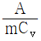
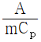
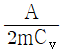
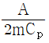
(정답률: 62%)
32. 물 1kg이 50℃의 포화액 상태로부터 동일 압력에서ㅗ 건포화증기로 증발할 때까지 2280kJ을 흡수하였다. 이 때 엔트로피의 증가는 몇 kJ/K인가?
- 7.06
- 15.3
- 22.3
- 47.6
(정답률: 50%)
33. 임의의 가역 사이클에서 성립되는 Clausius의 적분은 어떻게 표현되는가?
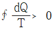
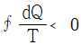
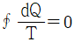
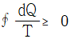
(정답률: 61%)
34. 열역학적 사이클에서 사이클의 효율이 고열원과 저열원의 온도만으로 결정되는 것은?
- 카르노 사이클
- 랭킨 사이클
- 재열 사이클
- 재생 사이클
(정답률: 71%)
35. 이상적인 단순 랭킨사이클로 작동되는 증기원동소에서 펌프 입구, 보일러 입구, 터빈 입구, 응축기 입구의 비엔탈피를 각각 h1, h2, h3, h4라고 할 때 열효율은?
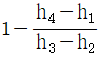
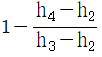
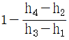
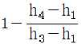
(정답률: 73%)
36. 다음 중 열역학 2법칙과 관련된 것은?
- 상태 변화시 에너지는 보존된다.
- 일은 100% 열로 변환시킬 수 있다.
- 사이클과정에서 시스템(계)이 한 일은 시스템이 받은 열량과 같다.
- 열은 저온부로부터 고온부로 자연적으로(저절로) 전달 되지 않는다.
(정답률: 75%)
37. 400K, 1MPa의 이상기체 1kmol이 700K, 1MPa으로 팽창할 때 엔트로피 변화는 몇 kJ/K인가? (단, 정압비열 Cp는 28kJ/kmolㆍK이다.)
- 15.7
- 19.4
- 24.3
- 39.4
(정답률: 34%)
38. 물을 20℃에서 50℃까지 가열하는데 사용된 열의 대부분은 무엇으로 변환되었는가?
- 물의 내부에너지
- 물의 운동에너지
- 물의 유동에너지
- 물의 위치에너지
(정답률: 79%)
39. 다음 중 부피 팽창계수 β에 관한 식은? (단, P는 압력, V는 부피, T는 온도이다.)
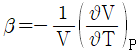
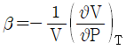
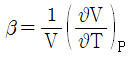
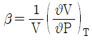
(정답률: 46%)
40. 다음 상태 중에서 이상기체 상태방정식으로 공기의 비체적을 계산할 때 오차가 가장 작은 것은?
- 1MPa, -100℃
- 1MPa, 100℃
- 0.1MPa, -100℃
- 0.1MPa, 100℃
(정답률: 61%)
3과목: 계측방법
41. 백금-백금ㆍ로듐 열전대 온도계에 대한 설명으로 옳은 것은?
- 측정 최고온도는 크로멜-알루멜 열전대보다 낮다.
- 다른 열전대에 비하여 정밀 측정용에 사용된다.
- 열기전력이 다른 열전대에 비하여 가장 높다.
- 200℃이하의 온도측정에 적당하다.
(정답률: 58%)
42. 내경이 50mm인 원관에 20℃ 물이 흐르고 있다. 층류로 흐를 수 있는 최대 유량은? (단, 20℃일 때 동점성계수(v)=1.0064×10-6m2//sec이고, 레이놀즈(Re)수는 2320이다.)
- 약 5.33×10-5m3/s
- 약 7.33×10-5m3/s
- 약 9.22×10-5m3/s
- 약 15.23×10-5m3/s
(정답률: 47%)
43. 편차의 정(+), 부(-)에 의해서 조작신호가 최대, 최소가 되는 제어동작은?
- 다위치동작
- 적분동작
- 비례동작
- 온ㆍ오프동작
(정답률: 83%)
44. 다음 중 사용온도 범위가 넓어 저항온도계의 저항체로서 가장 우수한 재질은?
- 백금
- 니켈
- 동
- 철
(정답률: 79%)
45. 접촉식 온도계에 대한 설명으로 틀린 것은?
- 일반적으로 1000℃ 이하의 측온에 적합하다.
- 측정오차가 비교적 적다.
- 방사율에 의한 보정을 필요로 한다.
- 측온 소자를 접촉시킨다.
(정답률: 64%)
46. 응답이 빠르고 감도가 높으며, 도선저항에 의한 오차를 작게 할 수 있으나 특성을 고르게 얻기가 어려우며, 흡습 등으로 열화 되기 쉬운 특징을 가진 온도계는?
- 광온도계
- 열전대 온도계
- 서미스터 저항체 온도계
- 금속 측온 저항체 온도계
(정답률: 70%)
47. 오르자트식 가스분석계에서 CO2측정을 위해 일반적으로 사용하는 흡습제는?
- 수산화칼륨 수용액
- 암모니아성 염화제1구리 용액
- 알칼리성 피로갈를 용액
- 발연 황산액
(정답률: 67%)
48. 열관리 측정기기 중 오벌(oval)미터는 주로 무엇을 측정하기 위한 것인가?
- 온도
- 액면
- 위치
- 유량
(정답률: 71%)
49. 공기압식 조절계에 대한 설명으로 틀린 것은?
- 신호로 사용되는 공기압은 약 0.2~1.0kg/cm2
- 관로저항으로 전송지연이 생길 수 있다.
- 실용상 2000m 이내에서는 전송지연이 없다.
- 신호 공기압은 충분히 제습, 제진한 것이 요구된다.
(정답률: 71%)
50. 탄성체의 탄성변형을 이용하는 압력계가 아닌 것은?
- 단관식
- 부르돈관식
- 벨로우즈식
- 다이어프램식
(정답률: 64%)
51. 열전대 보호관의 구비조건으로 틀린 것은?
- 기밀(氣密)을 유지할 것
- 사용온도에 견딜 것
- 화학적으로 강할 것
- 열전도율이 낮을 것
(정답률: 75%)
52. 다음 중 차압식 유량계가 아닌 것은?
- 오리피스(orifice)
- 로터미터(rotameter)
- 벤투리관(venturi)
- 플로우-노즐(flow-nozzle)
(정답률: 77%)
53. 열전대 온도계의 구성 부분으로 가장 거리가 먼 것은?
- 보상도선
- 저항코일과 저항선
- 감온접점
- 보호관
(정답률: 61%)
54. U-자관에 수은이 채워져 있다. 여기에 어떤 액체를 넣었는데 이 액체 20cm와 수은 4cm가 평형을 이루었다면 이 액체의 비중은? (단, 수은의 비중은 13.6이다.)
- 6.82
- 0.59
- 2.72
- 3.44
(정답률: 50%)
55. 열전대(thermo couple)의 구비조건으로 틀린 것은?
- 열전도율이 작을 것
- 전기저항과 온도계수가 클 것
- 기계적 강도가 크고 내열성, 내식성이 있을 것
- 온도상승에 따른 열기전력이 클 것
(정답률: 51%)
56. 다음 중 액체의 온도팽창을 이용한 온도계는?
- 저항 온도계
- 색 온도계
- 유리제 온도계
- 광학 온도계
(정답률: 60%)
57. 다이어프램 재질의 종류로 가장 거리가 먼 것은?
- 가죽
- 스테인리스강
- 구리
- 탄소강
(정답률: 59%)
58. 150°F 는 몇 ℃인가?
- 65.5℃
- 88.5℃
- 118.5℃
- 123.5℃
(정답률: 58%)
59. 적분동작(I동작)을 가장 바르게 설명한 것은?
- 출력변화의 속도가 편차에 비례하는 동작
- 출력변화가 편차의 제곱근에 비례하는 동작
- 출력변화가 편차의 제곱근에 반비례하는 동작
- 조작량이 동작신호의 값을 경계로 완전 개폐되는 동작
(정답률: 66%)
60. 체적유량
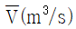
의 올바른 표현식은? (단, A(m2)는 유로의 단면적,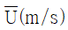
는 유로단면의 평균선속도이다.)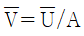
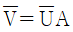
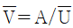
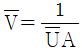
(정답률: 64%)
4과목: 열설비재료 및 관계법규
61. 진주암, 흑석 등을 소성, 팽창시켜 다공질로 하여 접착제와 3~15%의 석면 등과 같은 무기질 섬유를 배합하여 성형한 고온용 무기질 보온재는?
- 규산칼슘 보온재
- 세라믹화이버
- 유리섬유 보온재
- 펄파이트
(정답률: 68%)
62. 검사대상기기 설치자가 검사대상기기 조종자를 선임 또는 해임한 경우 산업통상자원부령에 따라 시ㆍ도지사에게 해야 하는 행정 사항은?
- 승인
- 보고
- 지정
- 신고
(정답률: 75%)
63. 고압배관용 탄소강 강관(KS D 3564)의 호칭지름의 기준이 되는 것은?
- 배관의 안지름 기준
- 배관의 바깥지름 기준
- 배관의(안지름+바깥지름)/2 기준
- 배관나사의 바깥지름 기준
(정답률: 72%)
64. 유체의 역류를 방지하기 위한 것으로 밸브의 무게와 밸브의 양면 간 압력차를 이용하여 밸브를 자동으로 작동시켜 유체가 한쪽 방향으로만 흐르도록 한 밸브는?
- 슬루스밸브
- 회전밸브
- 체크밸브
- 버터플라이밸브
(정답률: 82%)
65. 보온재 내 공기 이외의 가스를 사용하는 경우 가스분자량이 공기의 분자량보다 적으면 보온재의 열전도율의 변화는?
- 동일하다.
- 적게 된다.
- 크게 된다.
- 크다가 적어진다.
(정답률: 64%)
66. 에너지사용안정을 위한 에너지저장의무 부과대상자에 해당되지 않는 사업자는?
- 전기사업법에 따른 전기사업자
- 석탄산업법에 따른 석탄가공업자
- 집단에너지사업법에 따른 집단에너지사업자
- 액화석유가스사업법에 따른 액화석유가스사업자
(정답률: 70%)
67. 크롬벽돌이나 크롬-마그벽돌이 고온에서 산화철을 흡수하여 표면이 부풀어 오르고 떨어져 나가는 현상은?
- 버스팅
- 큐어링
- 슬래킹
- 스폴링
(정답률: 70%)
68. 효율관리기자재에 해당되지 않는 것은?
- 전기냉장고
- 자동차
- 삼상유도전동기
- 전동차
(정답률: 65%)
69. 에너지이용합리화법의 목적이 아닌 것은?
- 에너지의 합리적인 이용 증진
- 국민경제의 건전한 발전에 이바지
- 지구온난화의 최소화에 이바지
- 에너지자원의 보전 및 관리와 에너지수급 안정
(정답률: 64%)
70. 검사대상기기의 검사유료기간의 기준으로 틀린 것은?
- 검사에 합격한 날의 다음날부터 계산한다.
- 검사에 합격한날이 검사유효기간 만료일 이전60일이내인 경우 검사유효기간 만료일의 다음날부터 계산한다
- 검사를 연기한 경우의 검사유효기간은 검사유효기간 만료일의 다음 날부터 계산한다.
- 산업통상자원부장관은 검사대상기기의 안전관리 또는 에너지효율 향상을 위하여 부득이 하다고 인정할 때에는 검사유효기간을 조정할 수 있다.
(정답률: 71%)
71. 요로(窯爐)의 정의를 설명한 것으로 가장 적절한 것은?
- 물을 가열하여 수증기를 만드는 장치
- 물체를 가열시켜 소성 또는 용융하는 장치
- 금속을 녹이는 장치
- 도자기를 굽는 장치
(정답률: 75%)
72. 단가마는 어떠한 형식의 가마인가?
- 불연속식
- 반연속식
- 연속식
- 불연속식과 연속식의 절충형식
(정답률: 68%)
73. 에너지이용합리화법에서 규정한 수요관리 전문기관은?
- 한국가스안전공사
- 에너지관리공단
- 한국전력공사
- 전기안전공사
(정답률: 81%)
74. 에너지사용자가 수립하여야 할 자발적 협약 이행계획에 포함되지 않는 것은?
- 협약 체결 전년도의 에너지소비 현황
- 에너지관리체제 및 관리방법
- 전년도의 에너지사용량, 제품생산량
- 효율향상목표 등의 이행을 위한 투자계획
(정답률: 50%)
75. 에너지 사용계획 협의대상 사업으로 맞는 것은? (단, 기준면적 적용)
- 택지개발사업 중 면적이 10만m2 이상
- 도시개발사업 중 면적이 30만m2 이상
- 국가산업단지개발사업 중 면적이 5만m2 이상
- 공항개발사업 중 면적이 20만m2 이상
(정답률: 68%)
76. 에너지관리공단 이사장에게 권한이 위탁된 것이 아닌 것은?
- 에너지사용계획의 검토
- 에너지관리지도
- 효율관리기자재의 측정결과 신고의 접수
- 열사용기자재 제조업의 등록
(정답률: 70%)
77. 에너지법에서 정의한 용어의 설명으로 틀린 것은?
- 열사용기자재라 함은 핵연료를 사용하는 기기, 축열식 전기기기와 단열성 자재로서 기획재정부령이 정하는 것을 말한다.
- 에너지사용기자재라 함은 열사용기자재 그 밖에 에너지를 사용하는 기자재를 말한다.
- 에너지공급설비라 함은 에너지를 생산ㆍ전환ㆍ수송ㆍ저장하기 위하여 설치하는 설비를 말한다.
- 에너지사용시설이라 함은 에너지를 사용하는 공장ㆍ사업장 등의 시설이나 에너지를 전환하여 사용하는 시설을 말한다.
(정답률: 63%)
78. 사용연료를 변경함으로써 검사대상이 아닌 보일러가 검사대상으로 되었을 경우에 해당되는 검사는?
- 구조검사
- 설치검사
- 개조검사
- 재사용검사
(정답률: 55%)
79. 플라스틱 내화물의 설명으로 틀린 것은?
- 소결력이 좋고 내식성이 크다.
- 캐스터블 소재보다 고온에 적합하다.
- 내화도가 높고 하중 연화점이 낮다.
- 팽창 수축이 적다.
(정답률: 53%)
80. 보온재로서 구비하여야 할 일반적인 조건이 아닌 것은?
- 불연성일 것
- 비중이 작을 것
- 연전도율이 클 것
- 어느 정도의 강도가 있을 것
(정답률: 73%)
5과목: 열설비설계
81. 보일러의 용접 설계에서 두께가 다른 판을 맞대기 이음할 때 중심선을 일치시킬 경우 얼마 이하로 기울기로 가공하여야 하는가?
- 1/2
- 1/3
- 1/4
- 1/5
(정답률: 61%)
82. 다음 그림과 같은 V형 용접이음의 인장응력(σ)을 구하는 식은?
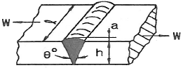
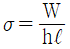
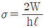
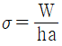
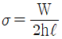
(정답률: 71%)
83. 보일러에 설치된 과열기의 역할로 틀린 것은?
- 포화증기의 압력증가
- 마찰저항 감소 및 관내부식 방지
- 엔탈피 증가로 증기소비량 감소 효과
- 과열증기를 만들어 터빈의 효율 증대
(정답률: 38%)
84. 급수펌프 중 원심펌프는 어느 것인가?
- 워싱턴 펌프
- 웨어 펌프
- 볼류트 펌프
- 플런저 펌프
(정답률: 64%)
85. 보일러에서 발생하는 저온부식의 방지 방법이 아닌 것은?
- 연료 중의 황 성분을 제거한다.
- 배기가스의 온도를 노점온도 이하로 유지한다.
- 과잉공기를 적게 하여 배기가스 중의 산소를 감소시킨다.
- 전열면 표면에 내식재료를 사용한다.
(정답률: 69%)
86. 노통 연관 보일러의 노통 바깥 면은 가장 가까운 연관의 면과 몇 mm 이상의 틈새를 두어야 하는가?
- 20mm
- 30mm
- 40mm
- 50mm
(정답률: 66%)
87. 용존고형물이 증가하면 전기 전도도는 어떻게 되는가?
- 커지다 작아진다.
- 관계없다.
- 작아진다.
- 커진다.
(정답률: 57%)
88. 보일러 동체, 드럼 및 일반적인 원통형 고압용기 두께의 계산식은? (단, t는 원통판 두께, P는 내부 압력, D는 안지름, σ는 허용인잔응력(원통 단면의 원형접선방향)이다.)
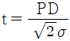
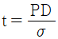
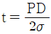
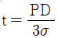
(정답률: 72%)
89. 프라이밍(priming)과 포밍(foaming)의 발생 원인이 아닌 것은?
- 증기부하가 적을 때
- 보일러수에 불순물, 유지분이 포함되어 있을 때
- 수면과 증기 취출구와의 거리가 가까울 때
- 주증기 밸브를 급히 열었을 때
(정답률: 69%)
90. 압력이 20kgf/cm2, 건도가 95%인 습포화증기를 시간당 5ton을 발생하는 보일러에서 급수온도가 50℃라면 상당증발량은? (단, 20kgf/cm2의 포화수와 건포화증기의 엔탈피는 각각 215.82kcal/kg, 668.5kcal/kg이다.)
- 5528 kcal/h
- 8345 kcal/h
- 10258 kcal/h
- 12573 kcal/h
(정답률: 29%)
91. 자연순환식 수관보일러에서 물의 순환에 관한 설명으로 틀린 것은?
- 순환을 높이기 위하여 수관을 경사지게 한다.
- 순환을 높이기 위하여 수관 직경을 크게 한다.
- 순환을 높이기 위하여 보일러수의 비중차를 크게 한다.
- 발생증기의 압력이 높을수록 순환력이 커진다.
(정답률: 49%)
92. 다음 중 ppm의 환산 단위로 가장 거리가 먼 것은?
- mg/kg
- g/ton
- mg/L
- kg/s
(정답률: 70%)
93. 다음 보기에서 설명하는 증기트랩은?
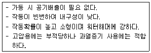
- 디스크식 트랩(disc type trap)
- 버켈형 트랩(bucket type trap)
- 플로트식 트랩(float type trap)
- 바이메탈식 트랩(bimetal type trap)
(정답률: 55%)
94. 보일러 안전장치의 종류가 아닌 것은?
- 방폭문
- 안전밸브
- 체크밸브
- 고저수위경보기
(정답률: 70%)
95. 열매체보일러의 특징에 대한 설명으로 틀린 것은?
- 저압으로 고온의 증기를 얻을 수 있다.
- 겨울철에도 동결의 우려가 적다.
- 물이나 스팀보다 전열특성이 좋으며, 사용온도한계가 일정하다.
- 다우삼, 모빌섬, 카네크롤 보일러 등이 이에 해당한다.
(정답률: 52%)
96. 내경 2000mm, 사용압력 10kgf/cm2의 보일러 강판의 두께는 몇 mm로 해야 ㅎ는가? (단, 강판의 인장강도 40kgf/mm2, 안전율 4.5, 이음효율 η=70%, 부식여유 2mm를 가산한다.)
- 16mm
- 18mm
- 20mm
- 24mm
(정답률: 56%)
97. 다음과 같은 결과의 수관식 보일러에서 시간당 증발량(a)과 시간당 연료사용량(b)은? (단, 증기압력 0.7MPa, 급유량 1000kg, 급수온도 24℃, 급수량 30000kg, 시험시간 5시간이다.)
- (a) 3000kg/h, (b) 100kg/h
- (a) 6000kg/h, (b) 100kg/h
- (a) 3000kg/h, (b) 200kg/h
- (a) 6000kg/h, (b) 200kg/h
(정답률: 54%)
98. 보일러의 리벳 이음 시 양쪽 이음매 판의 최소 두께를 구하는 식으로 옳은 것은? (단, to 눈 양쪽 이음매 판의 최소 두께(mm), t는 드럼판의 두께(mm)이다.)
- to=0.1t+2
- to=0.6t+2
- to=0.1t+5
- to=0.6t+5
(정답률: 60%)
99. 원통형보일러의 노통이 편심으로 설치되어 관수의 순환작용을 촉진시켜 줄수 있는 보일러는?
- 코르니쉬 보일러
- 라몬트 보일러
- 케와니 보일러
- 기관차 보일러
(정답률: 71%)
100. 인젝터의 특징으로 틀린 것은?
- 급수온도가 높으면 작동이 불가능하다.
- 소형 저압보일러용으로 사용된다.
- 구조가 간단하다.
- 열효율은 좋으나 별도의 소요 동력이 필요하다.
(정답률: 66%)
석탄을 완전 연소시키기 위해서는 공기를 적당하게 보내 피연물과 잘 접촉시키고, 통풍력을 좋게 하여 연소 반응을 촉진하며, 공기를 예열하여 연소 온도를 높이는 것이 필요합니다.